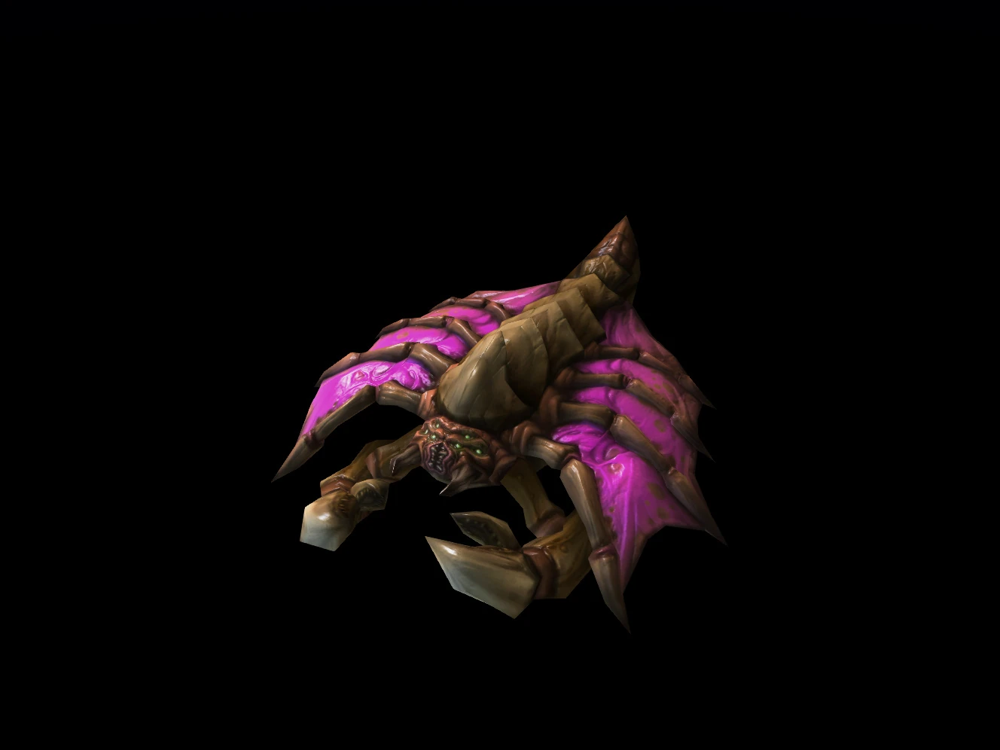
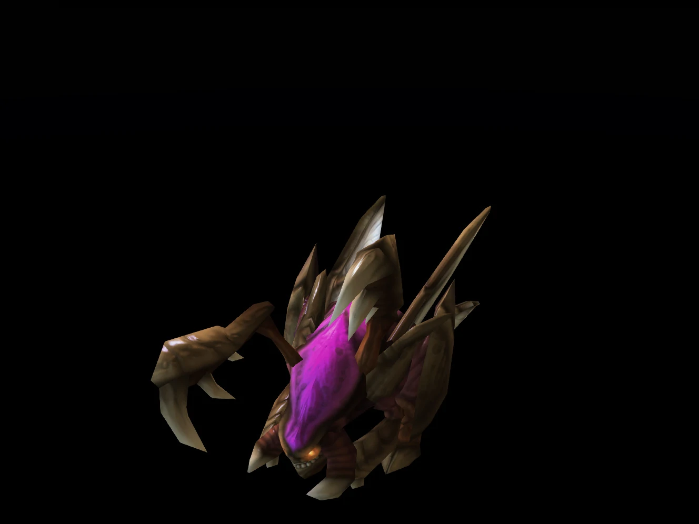
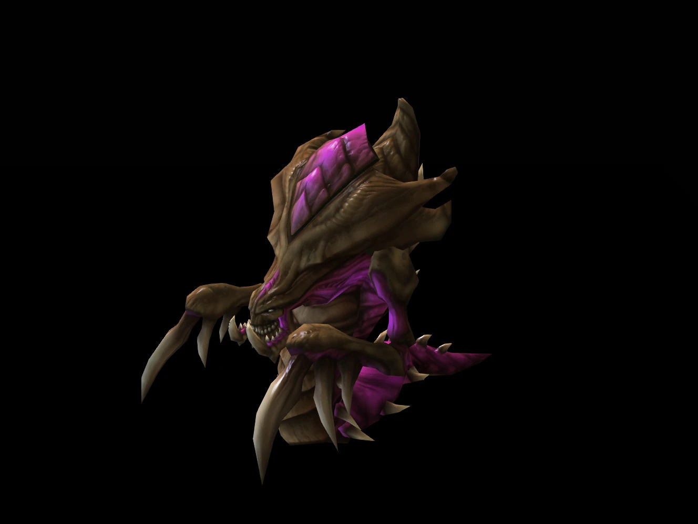
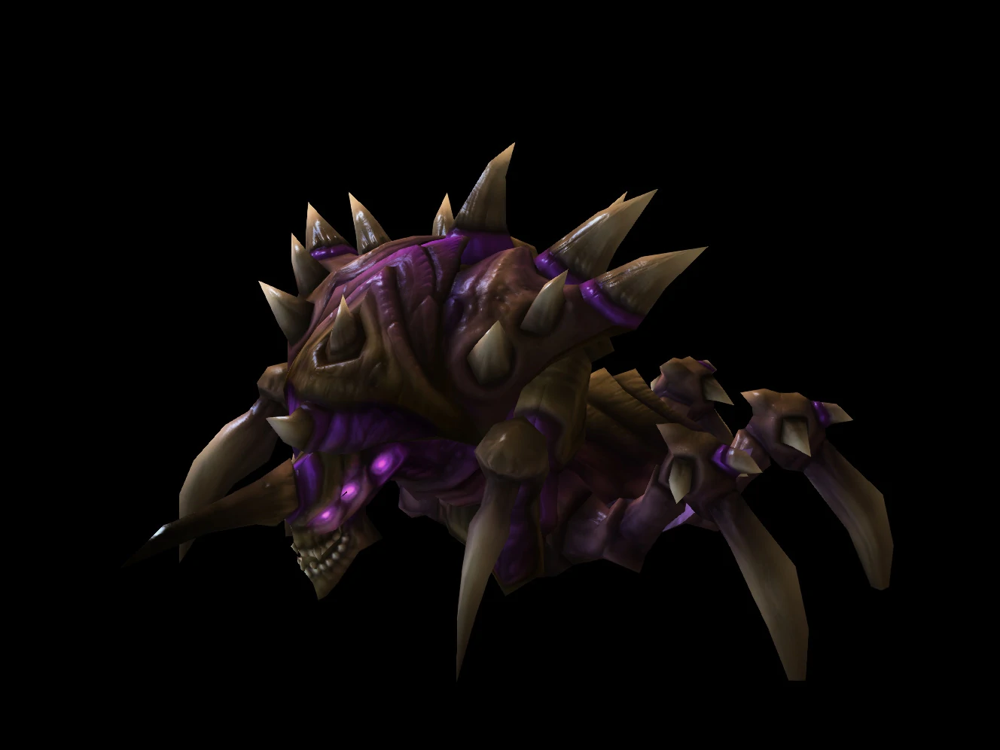
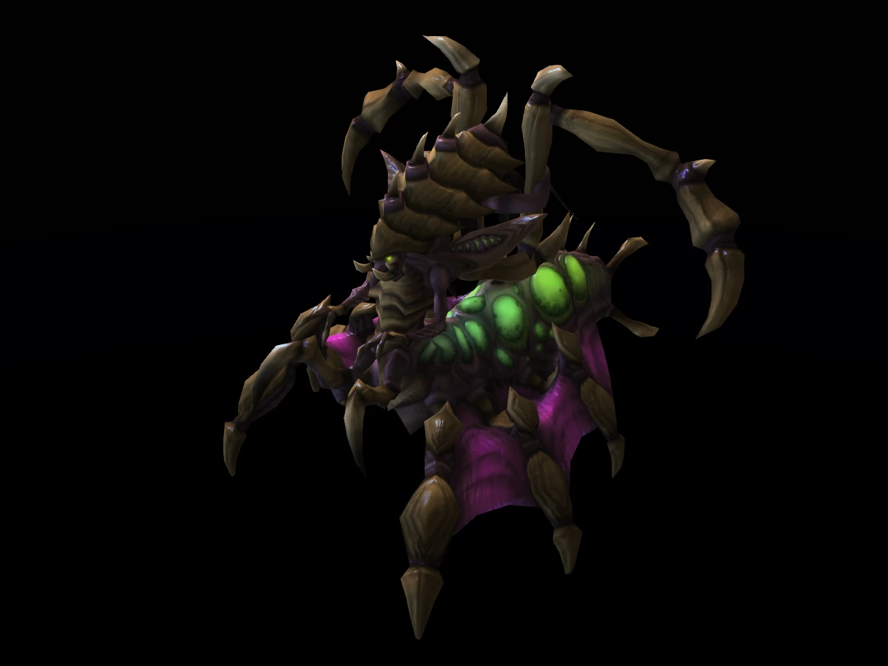
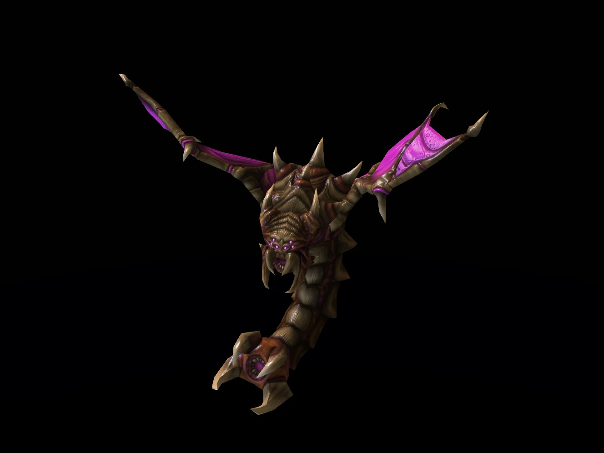
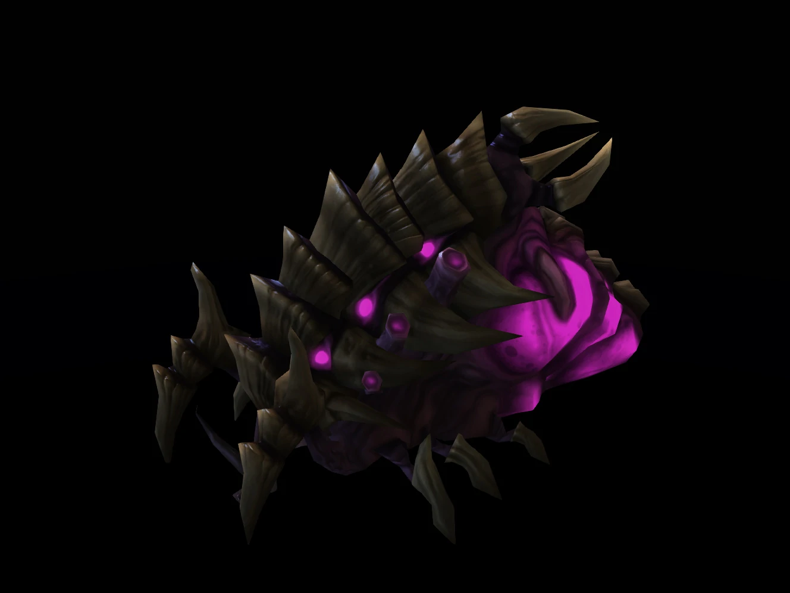
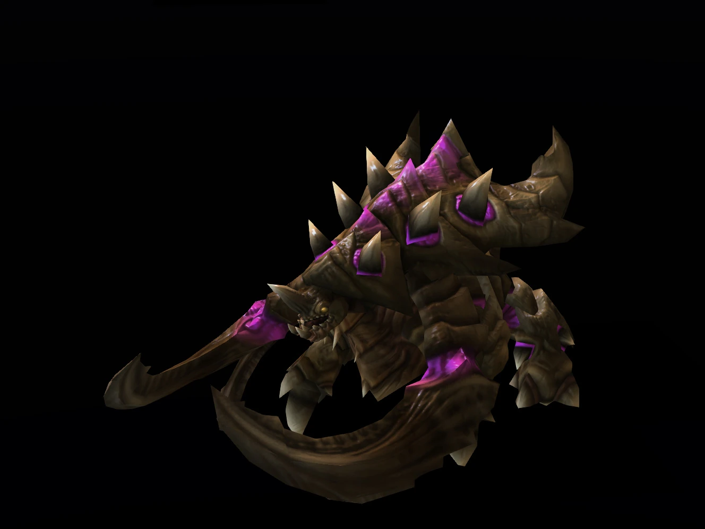

A ravasz Queen of Blades vezérletével az idegen zerg faj kész elszabadítani a poklot a galaxisban, felemésztve mindent ami az útjukba áll. A zerg-ek nem használnak technológiát fegyvereik, páncéljuk vagy csillaghajóik megalkotásához, ehelyett ezeket a hiályosságokat biológiai adaptációval és tervezett mutációval töltik be hatékonyan.
- Egységek, amelyek a felszín alá ássák magukat
- Gyorsan mozgó egységek raja, mint pédául a Zergling-ek vagya Mutalisk-ek
- Creep terül szét a zerg bázis körül, ami tápláló biológiai anyaggal látja el azt
| Icon | Egységnév | Egység leírás |
|---|---|---|
|  | Drone | A drone a zerg faj dolgozója. A drone-ok genetikai kódjukon belül tartják az összes zerg-struktúra evolúciós kódját, így magukból formálják az épületeiket. |
|  | Zergling | A zergling-ek alkotják a legnépesebb zerg törzset. Egyszerű DNS-ük lehetővé teszi, hogy egyetlen lárvából két zergling is kifejlődjön. A zergling gyors, de gyenge közelharcos egység. Ideális nagy létszú támadásokhoz. |
|  | Hydralisk | A hydralisk a slothien zerg evolúciója, hét vagy nyolc különböző és változatos organizmustörzzsel kombinálva. Míg a slothien-ek békés növényevők voltak, addig a hydralisk az egyik legvadabb és legszadistább zerg törzsnek számít. A hydralisk zerg-ek alapvető frontvonalbeli lénye, amely támadásaik gerincét képezi ellenálló páncéljával, és távolsági támadásával. |
|  | Lurker | Más zerg törzsekhez képest a lurker-ek pókszerű megjelenésűek. A hidraliszkből fejlődtek ki, és azon ritka zerg törzsek közé tartoznak, amelyek beásva magukat is képesek támadni. |
|  | Queen | A queen értelmes lény, agyát egy páncélozott koponya veszi körül, ami egy sor idegzsinórhoz csatlakozik. Felépítése hasonlít a protoss-okéhoz. A queen nagy mentális képességekkel van felruházzva, de komoly korlátai vannak. Limitált önálló gondolkodással, elemzéssel és eszességgel rendelkeznek. Korlátozott parancsnoki szerepet játszanak a zerg nest irányításában. |
|  | Mutalisk | A mutalisk egy levegőben élő zerg fajta. A mutalisk bőrszerű szárnnyal rendelkezik ami elképesztő sebességet és manőverezőképességet biztosít nekik a légköri repülés során. A szárnyak mozgása energiát is termel, amely katalizátorként szolgál a lény belső biológiai funkciói számára. Egyike a legjobban alkalmazkodó zerg alfajoknak. Képes továbbfejlődni brood lord-á és viper-é. |
|  | Infestor | Az infestor-ok erős lábai maró anyagot választanak ki, ami felpuhítja a talajt, és lehetővé teszi számukra, hogy egy szempillantás alatt beássák magukat a föld alá. Az állkapcsából kinyúló érzékelő csápok a biológiai adó-vevő készülékként működnek, amik szemként és fülként szolgálnak a föld alatt. |
|  | Ultralisk | Az ultralisk-ek a legerősebb gyalogsági törzs, amellyel a raj rendelkezik. Élő faltörő kosok, méretükhöz képest gyorsak, nagy, csontszerű kaszákkal támadnak, amelyek a hátukból állnak ki. |